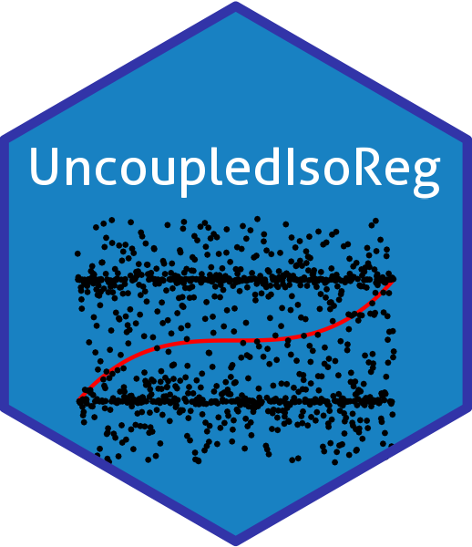

UncoupledIsoReg 
This R package implements the algorithm proposed by Rigollet & Weed in their 2019 paper to solve the uncoupled isotonic regression problem for normal and Bernoulli errors. You can read about the theory for the Bernoulli error case in our paper: Meis J., Mammen E. (2021) Uncoupled Isotonic Regression with Discrete Errors. In: Daouia A., Ruiz-Gazen A. (eds) Advances in Contemporary Statistics and Econometrics. Springer, Cham.
Installation
You can install the development version of UncoupledIsoReg from GitHub with:
remotes::install_github("jan-imbi/UncoupledIsoReg")Example
You can check out useage instructions: https://jan-imbi.github.io/UncoupledIsoReg/articles/UncoupledIsoReg_usage_guide.html.
For some details on numerical aspects, see here: todo.